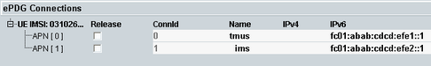

ePDG Connection Information
The ePDG connections area lists all connections that are currently established via the ePDG.
For each listed connection, an IPsec tunnel has been established between the DUT and the ePDG. When a connection is released, it is removed from the list.

Connection information on the ePDG tab
For one IMSI, there can be up to 15 connections. If there are established connections for several DUTs (IMSIs), a separate node is displayed for each IMSI.
There is one row per connection. The following columns are displayed:
- "UE IMSI: xxx": IMSI of the DUT
- "Release": selects the connections to be released if you press the softkey "Release Connection"
- "Connid": connection ID, used in the event log when events related to this connection occur
- "Name": access point name (APN)
- "IPv4": DUT IPv4 address
- "IPv6": DUT IPv6 address